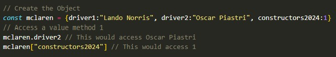

JavaScript (not to be confused with Java - two separate languages) is a language that utilises complex arguments, logic, functions, and more to allow you to add more interactivity and dynamic features on a web page. These may be interactive forms with users, collecting data from the input and creating an output based on this data, or even playing games.
For the other fans out there, I'm going to use F1 as an analogy. HTML is the chassis of the car, the barebones and structure. CSS is the livery, and what makes it look stylish or cool (or not). Then JavaScript is the sick parts of science and everything else about the car that makes it go fast. JavaScript enhances the chassis or makes the basics better than before - i.e. the specialty designed tyres for superior grip/performance, and particularly the design of the aerodynamics aspects which means how the air interacts with the design of the car such as downforce and drag.
Control flow is to do with the order in which JavaScript executes each line of code, or the statements/arguments. Code runs across lines from top to bottom unless conditions and loops are included (which is common) and then these bits of code are repeated. Ensuring good control flow is therefore vital to clean functioning of the web page so it doesn't break or become unresponsive. Bad control flow would be like trying to add your peanut butter to your toast on the plate before the toast is out of the toaster.
Loops are an efficient way to repeat code and iterate through several checks, counts, or similar variations to reach a certain decision point or collect all the data you need. A loop for toast may be that you put the bread in the toaster, once it pops, take it out to check if it is toasted enough, if it is, put on your plate to add your spread, if it is not, you put it back in the toaster, and wait for it to pop again. At which point you repeat the loop and check.
Because I still like my F1 analogy... could look at loops as checking their tyres as the drivers go each time around the track and whether they need to make a pit stop and change their tyres. Part of the loop, would be checking the tyre degradation, if they locked up, is it raining, how many laps left to go, or any punctures. Each of these checks is part of the loop they would repeat each time they come up to the pit stop. Good control flow is ensuring they check this data/information (where possible) before they get to the pit stop entrance.
The DOM (Document Object Model) is a live representation of all the html elements on the page which can be fleshed out in a tree diagram structure. If the window browser is the top top of the tree, the document is next, HTML root follows and then branches feed off the html root such as the head and body and then more branches off those. The DOM allows you to locate specific elements and see how they're constructed with html and css. You can also trial change html elements or css styling with the DOM to see how certain changes would look in the browser before enacting them.
The first key step is to locate the element within the DOM console (blog-container class) and then you can specify the changes (background color to pink).
Changes to the blog container div background colour before and after
An array (set out in between []) is a stored list of values of any type. The values could be text "strings" or numbers and each value (or element) are ordered based on their index, which also starts counting at 0. In the array set out below McLaren is index 0 and then Redbull is index 1. You can access a value/element within the array by putting the index number in-between the [] to call out that value.
An Object holds multiple values from different potential arrays but an object is referred to as a variable with many variables within it, called keys and each key has a value. If the array above is the F1 teams, then we might have an object for McLaren where keys could be Driver 1, Driver 2, 2024 constructors place, and the values for each of those as follows. Object values can be accessed in two ways as shown below.
A function is like a written rule or operation of code that must be called on to execute and could be executed many times. They are helpful due to the ability to store them and call on them later to perform the operation. This helps with simplicity in code and mitigates bugging. F1 teams will have strategies in place they will enact depending on how the race is going which is like a function. If it starts raining, then Strategy B, if not then maintain Strategy A.